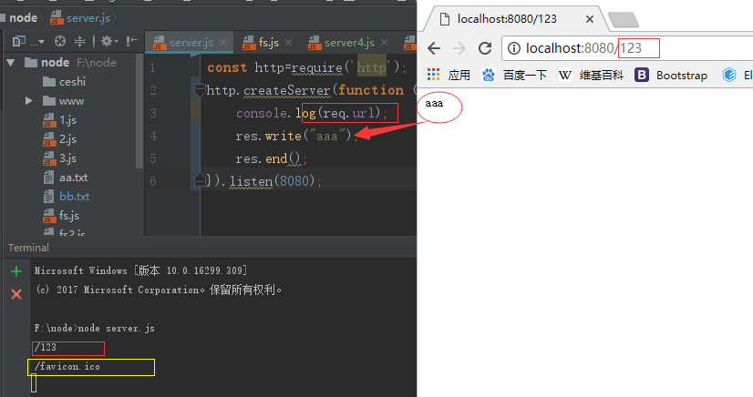

Node.js 之 优势及安装配置
一、Node —— advantages？
1、性能高，根据大佬们测试，高于PHP86倍，就同样的设备同样的硬件运行node与PHP，node 用1s反馈，那PHP就要用一分半钟，是不是可以这样理解，如果PHP需要100台服务器，那node要一台就够了。。。
2、与前台js配合方便， 前台的编译代码、部署等等；
3、node 模块化 自定义模块，支持es6，框架有express、koa等；
4、更便于前端学习，人生苦短，Java PHP学不会。。。So,掌握好JavaScript本身，学起来node就变得简单多了，node做后台，JavaScript做前台，perfect。
二、Node —— How to use it?
1、安装，NA，官网 Download LTS稳定版，步骤呢， step step；
2、open your 终端，write node 回车 如果没啥东西的话表示安装成功了 ，如果报错了，也别急，试试重启电脑。
3、now ，you can play it！
（1）、首先呢你要记住 node.js他就像一个服务器，现在你是后端，你是后端，你是后端！现在你不需要建HTML啊css啊，就建个js ，
（2）、随便在哪个盘里 建个文件夹，但也不能瞎建，后面要用，栗如在F盘吧，你建个node命名的文件夹，然后打开编辑器，拖进来，建个xxx.js就叫1.js吧，里面写点儿啥啊，得让它跑起来是吧，就先在 1.js 里面写个最简单的，console.log("hello world")，之前写个HTML在浏览器打开就能看见打印的东西，这咋看呢，不急。 打开终端，你maybe切盘 切到你建的那个文件夹所在的盘里，切哪个，哪个盘的后面加上冒号，
这里应该是F：回车 切到了F盘，再得切到你建的文件夹吧 快捷键cd你的文件夹名字 回车 然后node空格1.js现在就看见了吧
（3）、如果你也讨厌每次都要在终端运行 每次都要打开这黑乎乎的东西，就在编辑器里打开，maybe 不用你切换文件夹目录，直接node空格你的js文件名就可以，如果没错的话 就打印出来了吧，你想停掉的话 快捷键Ctrl+C；
4、node就是一个 服务器，一个有追求的服务器，那得有人访问啊，访问得通过浏览器访问吧，浏览器跟服务器之间连接需要HTTP协议吧，但HTTP很复杂的，上面说过了，node 模块化 有很多的模块 拿来用就可以了 ，now，引用
http模块吧：
（1）、 引用方式：
const http=require('http');
（2）引用完之后，上面说了node就是一个 服务器，所以呀得创建个服务啊， 服务器不能过节不能休息吧，一台服务器永远都在运行，所以得有监视他，这里就叫监听
（listen），监听就好比小区看门的大爷，你说要去张三，大爷说了：“那个啥，张三就在三号楼三单元301，”，说白了 当有人访问的时候得有个人得在那等着，告诉你该去哪去哪，你要是找的人不在这个小区，那就走吧，找不到你要的人啊。所以啊，你找的谁，谁就是个端口啊，有这个端口，那你就进来，没这个端口，那sorry，localhostmay refuse your request；
端口有好多（80开头的就代表web、还有邮件的110、数据库的3306啊等等），don’t repeat，确保唯一性，这里的监听端口就以大众版的“8080”吧，如下
var server =http.createServer(function (req,res) {
//req 请求；res响应；
console.log(req.url);//打印一下看看node给你返回啥
res.write("你请求了 我得给你响应吧");//这是一个简单的往前台写东西，毕竟总不能你访问啥URL我都给你返回这句话吧；
res.end();//告诉服务器一声，结束请求
});
//端口---就是数字 ；监听---就是等着，等着人来
server.listen("8080");//不是想看看给你打印的啥吗？先启动你的node node xxx.js 没错的话就打开浏览器输入---》localhost：8080 ！回车的同时看着你的node！
| 注:你试试在localhost：8080/xxx ,node 的后台就会打印出来你xxx的东西，你还会发现 还有一个/favicon.ico 都知道 就是那个图标，就当Google多情了吧; |
你也可以这样写：
const http=require('http');
http.createServer(function (req,res) {
console.log(req.url);
res.write("aaa");
res.end();
}).listen(8080);
如图所示:

OK, 已经很啰嗦的 写了关于node 的安装配置以及一丁点的基本使用，I hope it works for you，see you
------------------------------------------------------------------------------------------------------------------------------

 小礼物走一走 ，我们都是好朋友！
小礼物走一走 ，我们都是好朋友！